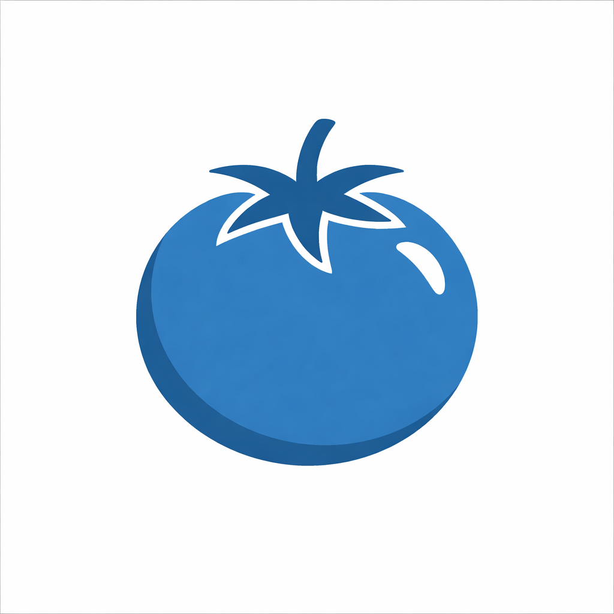

Pomaxis
Pomodoro
25:00
Classic focus block ready.
0/4
Daily Goal
Pomodoro Target
Complete 4 pomodoros today.
Tasks
0/0 completed

Pomodoro
Classic focus block ready.
Daily Goal
Complete 4 pomodoros today.
0/0 completed